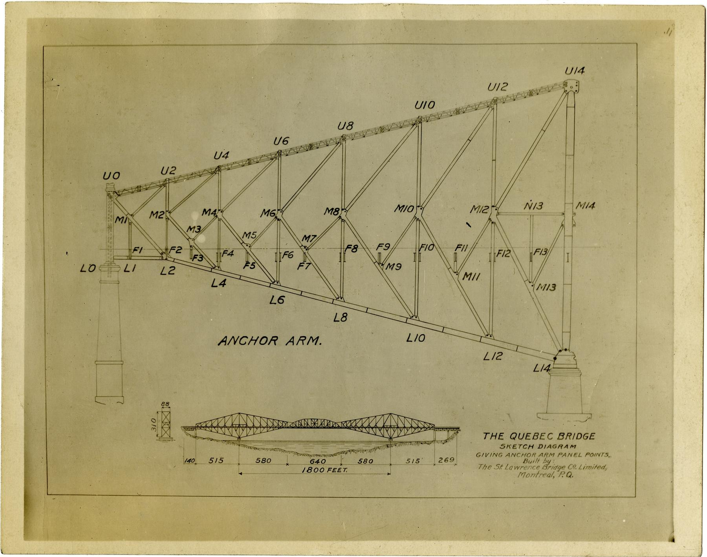
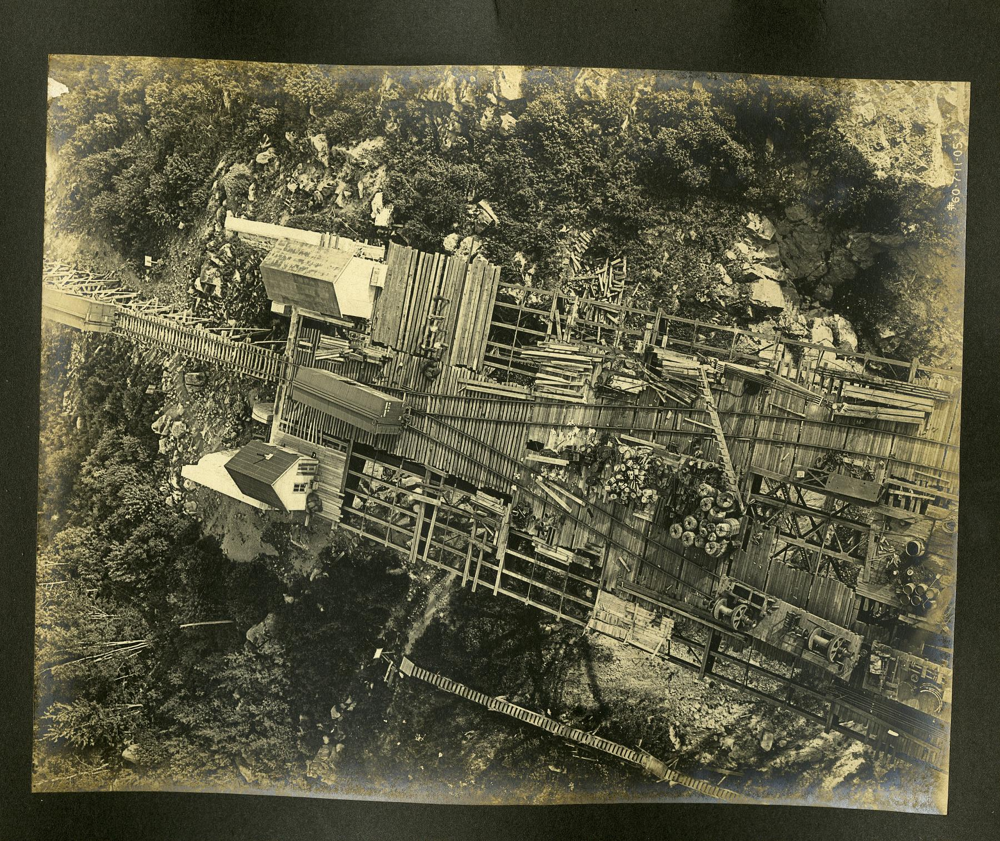
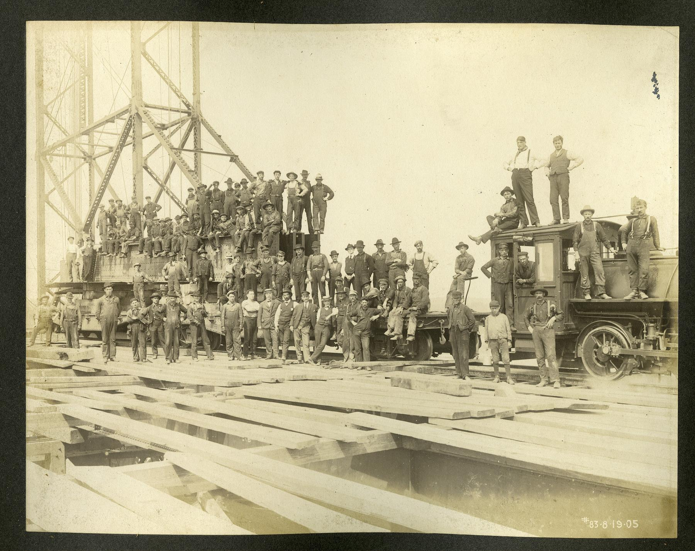
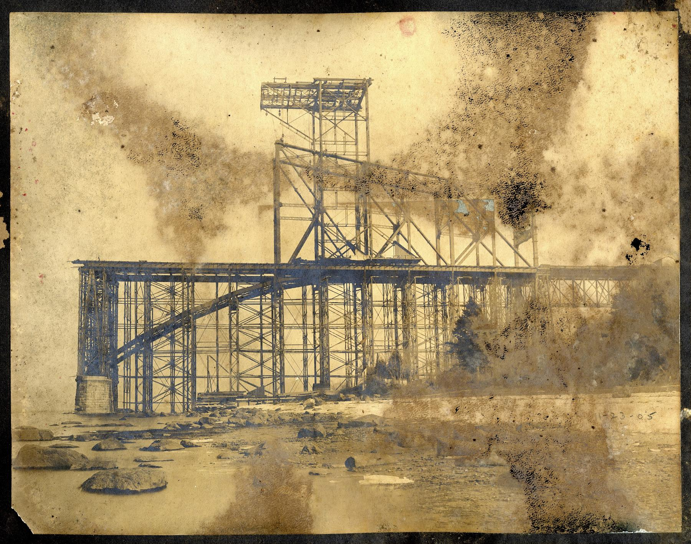
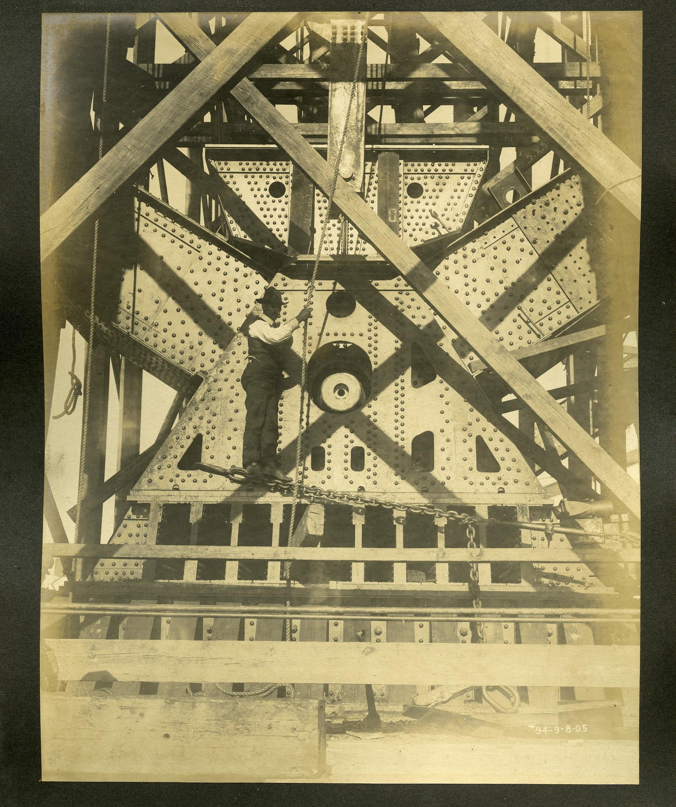
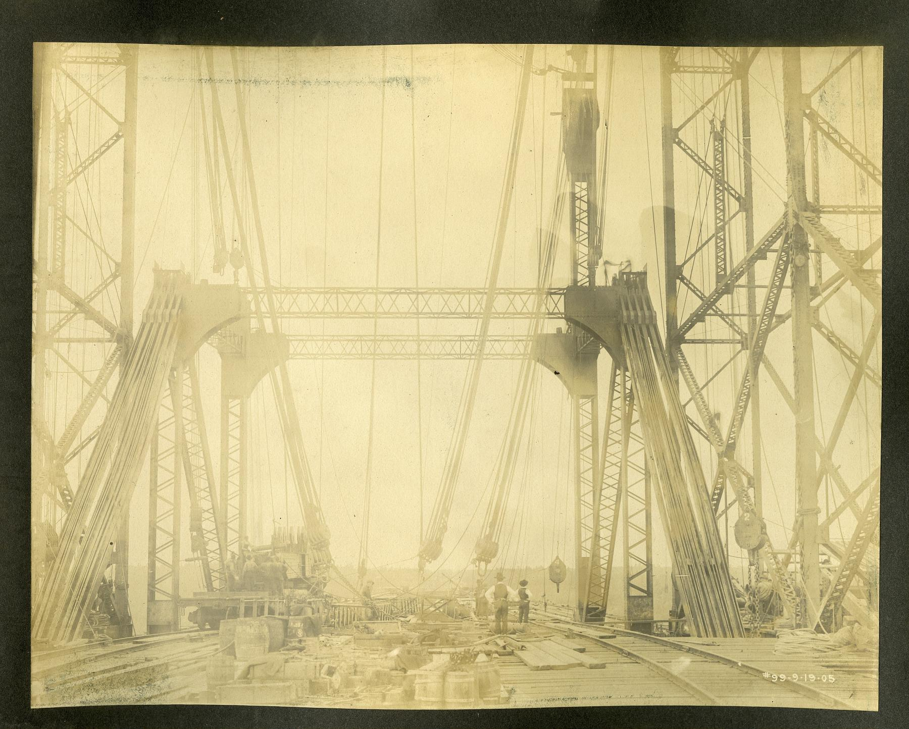
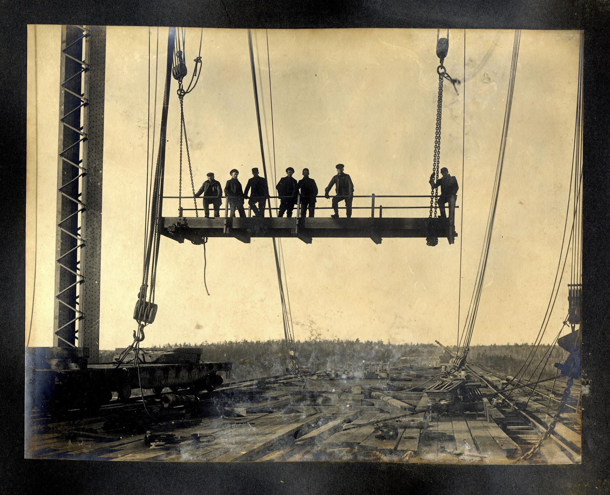

Recurso audiovisual · 35 minutos
El proyecto completo, desde la necesidad hasta su legado
Este documental recorre los dos intentos de construcción y presta una atención poco habitual a los medios de montaje, la secuencia de las advertencias, la investigación posterior y la historia de los trabajadores mohawk. Es una buena introducción antes de analizar el caso por fases de proyecto.
 Quebec Bridge: diseño, construcción y dos colapsos
Documental en inglés. La cronología visual ayuda a relacionar decisiones técnicas, organización de la obra y consecuencias humanas.
Quebec Bridge: diseño, construcción y dos colapsos
Documental en inglés. La cronología visual ayuda a relacionar decisiones técnicas, organización de la obra y consecuencias humanas.
Río San Lorenzo · 1900-1917
Una luz sin precedentes y una organización frágil
Cruzar el San Lorenzo junto a la ciudad de Quebec exigía dejar libre el canal de navegación. La solución elegida fue un puente ferroviario en voladizo con 549 metros entre apoyos principales. Cuando se completó, aquella luz se convirtió en la mayor del mundo para esta tipología.
La necesidad llevaba décadas identificada: los transbordadores dependían del estado del río y, en invierno, los cruces podían acabar dependiendo de una vía improvisada sobre el hielo. Sin embargo, reconocer una necesidad no hizo viable el proyecto. La Quebec Bridge Company, constituida en 1887, pasó años buscando emplazamiento, financiación y apoyo público con recursos muy limitados.
La Quebec Bridge Company contrató a la Phoenix Bridge Company para diseñar y fabricar la estructura. Theodore Cooper, uno de los ingenieros estadounidenses más prestigiosos de su época, actuaba como consultor principal desde Nueva York. La autoridad técnica real se concentraba en él, pero no residía en obra y dependía de informes, cartas y telegramas.
El ingeniero jefe de la compañía, Edward Hoare, tenía experiencia ferroviaria, pero no en puentes de una luz comparable. La organización reunió así un promotor débil, un consultor prestigioso pero distante, un equipo local con experiencia limitada para aquella escala y un contratista que desarrollaba el cálculo de detalle. Las responsabilidades existían, pero la capacidad para cuestionar y detener no estaba distribuida con la misma claridad.
Cooper amplió la luz inicialmente estudiada de unos 488 a 549 metros y permitió tensiones de cálculo mayores para contener el peso y el coste. La decisión reducía la necesidad de intervenir dentro del canal y aseguraba un récord mundial, pero alteraba todo el equilibrio del proyecto. La dificultad había aumentado más deprisa que la capacidad de la organización para revisar hipótesis y detener la construcción.

La primera obra en construcción
El álbum de 1905 permite observar el proyecto antes del colapso: la cimentación, las grandes estructuras auxiliares y el trabajo sobre una estructura todavía incompleta. Las imágenes no muestran el puente como un objeto terminado, sino como una sucesión de estados provisionales.



El puente pesaba más que el puente calculado
En una gran estructura en voladizo, el peso propio domina buena parte de los esfuerzos durante el montaje. Cada tramo añadido carga los elementos ya construidos y aumenta los momentos en el brazo de anclaje y junto a la pila. Por eso, estimar correctamente el acero no es una operación administrativa: define el estado resistente en cada fase.
Los cálculos habían conservado pesos asociados a una versión anterior de menor luz. Cuando se comparó el acero realmente fabricado con las previsiones, la diferencia era considerable. La estructura iba acumulando carga muerta sin que los cordones inferiores comprimidos se redimensionaran de forma coherente. La revisión que podía haber conectado el peso de taller con el modelo global no se realizó a tiempo.
La Comisión Real situó el aumento del peso real respecto a la estimación utilizada en torno al 18 %. Cooper había detectado una desviación menor en las tensiones y la consideró tolerable cuando buena parte del acero ya estaba fabricado. El problema no fue una única operación aritmética: el nuevo alcance no activó una revisión completa y trazable de cargas, secciones y estabilidad.

Las piezas avisaron antes de fallar
En agosto de 1907, trabajadores e inspectores observaron que varias barras del cordón inferior del brazo de anclaje sur se estaban arqueando. Eran elementos formados por grandes perfiles unidos, sometidos a compresión. La deformación lateral no era un defecto superficial: indicaba pérdida de estabilidad y proximidad al pandeo.
El ingeniero inspector Norman McLure comunicó las deformaciones. Las respuestas iniciales dudaron de que fueran reales o las atribuyeron a condiciones previas al montaje. McLure viajó a Nueva York para consultar a Cooper. Este comprendió finalmente la gravedad y ordenó por telegrama que no se añadiera más carga, pero la orden no se transformó de inmediato en una evacuación y paralización efectiva del tajo.
Las observaciones se repitieron durante agosto. El 27, el capataz detuvo temporalmente la obra después de comprobar que la deformación de un cordón había crecido con rapidez. Al día siguiente se reanudaron los trabajos. Sobre la decisión pesaban la continuidad de la temporada, la retención de la mano de obra y la presión del plazo. El calendario no causó el pandeo, pero sí formó parte del contexto en que una señal estructural se trató como un problema que aún podía esperar.
Quince segundos el 29 de agosto de 1907
Aquella tarde, con 86 trabajadores sobre la estructura, los cordones comprimidos cedieron. El brazo de anclaje sur, el voladizo y la parte ya montada del tramo suspendido cayeron al río en unos quince segundos. Murieron 75 personas, entre ellas 33 trabajadores mohawk de Kahnawà:ke.
La Comisión Real concluyó que el fallo se originó en el diseño de los cordones inferiores comprimidos: su capacidad era insuficiente para las cargas reales y su configuración no garantizaba la estabilidad. También señaló una supervisión inadecuada, la falta de experiencia suficiente en un proyecto de aquella escala y la concentración de autoridad sin control independiente eficaz.
La investigación no se limitó a reconstruir cálculos. El revisor independiente C. C. Schneider ensayó a compresión réplicas a escala real de los cordones. Los ensayos mostraron que el arriostramiento de celosía y sus roblones no conseguían que las cuatro ramas trabajaran como una única columna: al perder esa acción conjunta, las ramas individuales pandeaban. El mecanismo observado devolvía una respuesta física a una discusión que antes del accidente había quedado encerrada entre planos y correspondencia.
La cifra de víctimas también describe cómo se organizó el trabajo
Entre las 75 personas fallecidas había 33 trabajadores mohawk de Kahnawà:ke. No eran mano de obra ocasional: la comunidad había desarrollado desde finales del siglo XIX una reconocida tradición de montaje de estructuras metálicas. La pérdida afectó a familias y a una red profesional concentrada en un mismo tajo.
El documental explica cómo la catástrofe quedó incorporada a la memoria de Kahnawà:ke y a la posterior dispersión de sus cuadrillas entre distintas obras. Para la dirección de proyectos deja una cuestión incómoda: el riesgo no se distribuye solo por elementos estructurales. También puede concentrarse socialmente cuando una empresa, oficio o comunidad aporta una parte desproporcionada de las personas expuestas.
Un plan de riesgos que solo contabilizara el número total de personas expuestas ocultaría esa concentración. La composición de las cuadrillas, sus vínculos y la distribución de las consecuencias también forman parte del impacto previsible de una decisión de obra.
El segundo intento no fue una reparación
El Gobierno federal asumió el proyecto y constituyó un nuevo consejo de ingenieros. La segunda estructura se diseñó desde cero, con miembros más robustos, nuevos criterios y un peso muy superior. Los dos grandes voladizos se construyeron desde las orillas y dejaron entre ellos un hueco para una pieza central de unas 5 000 toneladas.
El vano central se montó cerca de la orilla, se transportó sobre pontonas y debía elevarse mediante dispositivos de suspensión hasta conectarlo a los extremos de los voladizos. Era una operación temporal singular: el puente definitivo podía estar bien calculado y, aun así, fracasar durante una fase de montaje con apoyos y cargas completamente diferentes.
La pieza de montaje que derribó 5 000 toneladas
El 11 de septiembre de 1916 comenzó el izado ante miles de espectadores. Cuando el tramo se encontraba suspendido, falló una pieza de apoyo del sistema de elevación. La carga se desequilibró, el vano se inclinó y cayó al San Lorenzo. Murieron trece trabajadores y más de catorce resultaron heridos.

El segundo accidente no repitió el error de 1907. El sistema resistente permanente había sido replanteado, pero el dispositivo temporal introdujo un nuevo punto único de fallo. Separar «proyecto» y «procedimiento de montaje» habría ocultado de nuevo dónde se encontraba el riesgo real.
El fallo se localizó en una pieza cruciforme de acero del apoyo provisional suroeste. Cada esquina soportaba del orden de 1 200 toneladas y la pieza debía permitir movimientos alrededor de dos ejes. Cuando se fracturó, una esquina descendió, el vano perdió el equilibrio y se deslizó de los apoyos. Para el nuevo izado de 1917 se eliminó aquel detalle y se adoptó un mecanismo más simple. La corrección no consistió en «hacer más fuerte» la misma pieza, sino en suprimir una interacción innecesariamente compleja.
Cuando la autoridad no viaja con la información
El primer colapso muestra una organización en la que el prestigio sustituyó parcialmente a la verificación. Cooper tenía autoridad para aprobar y detener, pero trabajaba lejos; el equipo de obra podía observar las piezas, pero no tenía una línea clara para imponer la parada. La información existía fragmentada entre cálculo, taller y montaje.
El segundo recuerda que la revisión debe cubrir todas las configuraciones temporales. Una gran obra no atraviesa un único estado calculado: cambia de geometría, apoyos y cargas hasta cerrarse. Cada etapa crítica necesita su propio modelo, sus tolerancias, su instrumentación y una autoridad de suspensión inequívoca.


El puente que finalmente cruzó el río
Un nuevo vano central se izó con éxito en 1917. El puente entró en servicio ferroviario ese año y fue inaugurado oficialmente en 1919. Su luz principal de 549 metros continúa siendo la mayor de un puente en voladizo.

Un anillo que recuerda, pero no procede del puente
El puente suele asociarse al anillo de hierro que muchos ingenieros canadienses llevan en el meñique de su mano de trabajo como recordatorio de sus obligaciones profesionales. La relación es ética, no material: la organización responsable de la ceremonia confirma que los anillos nunca se fabricaron con acero recuperado del puente. Los primeros eran de hierro forjado y los actuales emplean acero inoxidable.
La infraestructura sigue siendo un proyecto
En noviembre de 2024, el Gobierno de Canadá recuperó formalmente la propiedad del puente. La gestión se confió a Jacques Cartier and Champlain Bridges Incorporated y se anunció una inversión superior a 40 millones de dólares canadienses anuales durante 25 años. El programa comienza con inspecciones y diagnóstico para priorizar reparaciones y refuerzos del acero, pilas y cimentaciones, además de la protección frente a corrosión. Más de un siglo después, el caso continúa mostrando que la conservación también necesita estudios previos, planificación, financiación y responsabilidades explícitas.
Referencias y recursos
- ASCE: Quebec Bridge
Síntesis técnica e histórica del diseño, los dos accidentes y la obra final.
- Government of Canada: The history of the Québec Bridge
Cronología oficial y consecuencias de los accidentes de 1907 y 1916.
- Comisión Real de investigación del puente de Quebec
Informe oficial de 1908 sobre el diseño, las cargas, los cordones comprimidos y la organización del primer proyecto.
- ASCE: The Importance of a Personal Pledge
Responsabilidad profesional, supervisión y cadena de decisiones del primer puente.
- Smithsonian: Quebec Bridge Photograph Collection
Archivo documental sobre la construcción de los dos puentes entre 1905 y 1917.
- Documental sobre la construcción y los dos colapsos
Relato audiovisual de 35 minutos con especial atención a los medios de montaje, la investigación y los trabajadores mohawk.
- National Film Board of Canada: The Quebec Bridge Collapses
Recurso documental sobre las víctimas de Kahnawà:ke y la tradición mohawk del montaje de estructuras metálicas.
- Corporation of the Seven Wardens: preguntas frecuentes sobre el anillo de hierro
Fuente de la organización responsable de la ceremonia que desmiente el uso de acero del puente en los anillos.
- Government of Canada: adquisición y programa de rehabilitación
Nuevo modelo de propiedad, gestión e inversión anunciado en noviembre de 2024.